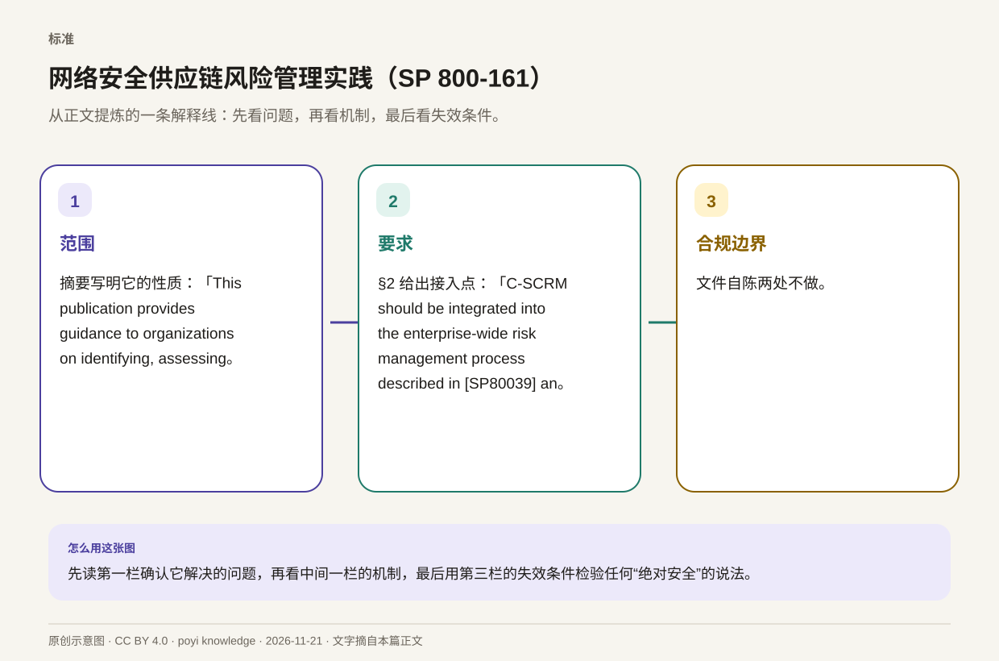
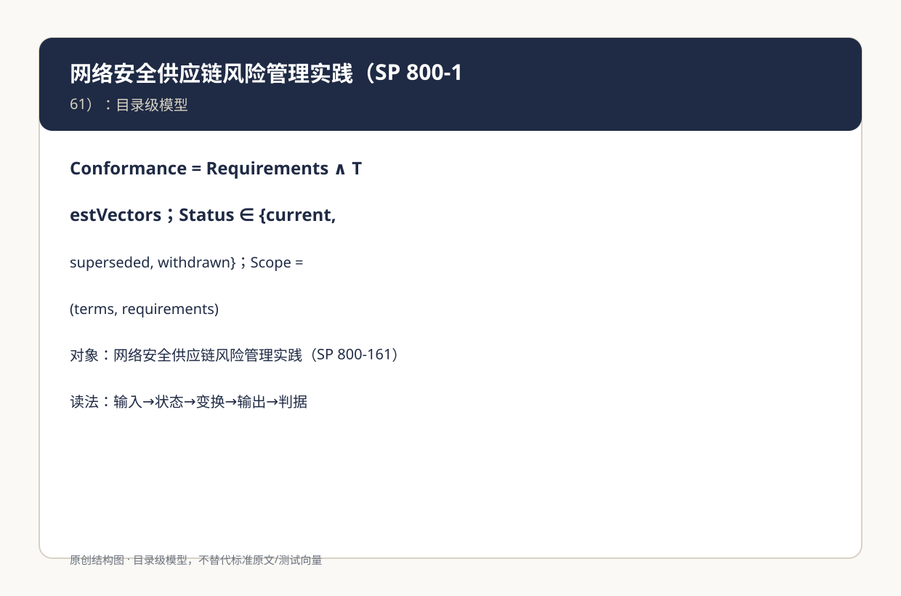

原理与机制
标准：网络安全供应链风险管理实践（SP 800-161）（Cybersecurity Supply Chain Risk Management Practices for Systems and Organizations (SP 800-161 Rev.摘要写明它的性质：「This publication provides guidance to organizations on identifying, assessing, and mitigating cybersecurity risks throughout the supply chain at all levels of their organizations.」做法是嵌进已有的风险管理：「The publication integrates cybersecurity supply chain risk management (C-SCRM) into risk management activities by applying a multilevel, C-SCRM-specific approach」。§1.1 为 C-SCRM 下定义：「Cybersecurity Supply Chain Risk Management (C-SCRM) is a systematic process for managing exposure to cybersecurity risks throughout the supply chain and developing appropriate response strategies, policies, processes, and procedures.」三段依次给出文件性质、实施路径与术语定义：它是给组织的指导，做法是把 C-SCRM 嵌入既有风险管理并分层实施，定义把管理对象说成暴露面连同响应策略、政策、过程与程序。

为什么重要
起点是买方的不可见性。摘要首句：「Organizations are concerned about the risks associated with products and services that may potentially contain malicious functionality, are counterfeit, or are vulnerable due to poor manufacturing and development practices within the supply chain.」并把根源归到过程看不见：「These risks are associated with an enterprise's decreased visibility into and understanding of how the technology they acquire is developed, integrated, and deployed」。§1 因此先定义对象：「In this document, the term supply chain refers to the linked set of resources and processes between and among multiple levels of an enterprise, each of which is an acquirer that begins with the sourcing of products and services and extends through the product and service life cycle.」引文把风险分成两层：产品或服务本身可能含恶意功能、是假冒的、或因制造与开发过程不佳而脆弱；买方看不见技术如何被开发、集成与部署。§1 的定义补充说链条上的每一层自身也是买方。
应用与实例
§2 给出接入点：「C-SCRM should be integrated into the enterprise-wide risk management process described in [SP80039] and depicted in Fig.3.」责任由组织共同承担：「Implementing C-SCRM requires enterprises to establish a coordinated team-based approach and a shared responsibility model to effectively manage cybersecurity risks throughout the supply chain.」并就跨部门输入给出建议（原文 should aim to，不是要求）：「Enterprises should aim to infuse perspectives from multiple disciplines and processes」。§1.4 为不同读者指路，对企业风险管理的读者写：「The entire document is relevant to and recommended for readers fitting this profile.」三句的主语都是企业自身：接入既有的风险管理过程、建立协同团队与共担责任模型、把多学科的视角注入做法；§1.4 的分读只是指引。

边界与攻击面
文件自陈两处不做。§1 划出与一般供应链风险管理的分界：「This publication does not address many of the non-cybersecurity aspects of SCRM.」§1.1 说明它不给路线图：「However, this publication does not offer a specific roadmap for enterprises to follow to reach various states of capability and maturity.」并强调须裁剪：「The C-SCRM guidance provided in this document is not one-size-fits-all.」前两句是主题上的分界，第三句是方法上的告诫：实践须按各企业的规模、资源与风险情形裁剪。另有一处限制属于这份副本：页眉写「May 2022 INCLUDES UPDATES AS OF 11-01-2024; SEE APPENDIX K」，而留存文本止于 §2.3.1 的责任表，第 3 章的关键实践与页眉所指的附录 K 都不在这份文本里，其内容在此不作断言。
历史与背景
页眉首行为「NIST Special Publication 800 NIST SP 800-161r1-upd1」，日期行写明「May 2022 INCLUDES UPDATES AS OF 11-01-2024; SEE APPENDIX K」，DOI 行是「This publication is available free of charge from:」，DOI 10.6028/NIST.SP.800-161r1-upd1。出版史块记录评审与取代关系：「Approved by the NIST Editorial Review Board on 2024-09-25 Supersedes NIST Special Publication 800-161r1 (May 2022)」，引用行给六位作者与年份并补一句「Includes updates as of November 1, 2024.」——「Boyens J, Smith A, Bartol N, Winkler K, Holbrook A, Fallon M (2022) Cybersecurity Supply Chain Risk Management Practices for Systems and Organizations.」致谢页另记 2015 年版作者：「the original authors of NIST SP 800-161, Celia Paulsen (NIST), Rama Moorthy (Hatha Systems), and Stephanie Shankles」。以上引文都出自这份留存文本自己的门面板块，合起来给出时间线：2022 年 5 月的第一修订、2024 年 11 月 1 日并入的更新、2024 年 9 月 25 日的评审批准，以及被取代的 800-161r1。
逐步示例与核验
形式模型与复算步骤
[S=\min_i S_i,\quad S_i\in{\text{密钥强度},\text{分组安全},\text{实现安全}}]
网络安全供应链风险管理实践（SP 800-161）的公开参数、密钥/随机数与消息；变量说明：S 为综合安全强度；各分量取最小值，不能只看密钥位数。1.读取标准规定的密钥/分组/模式参数。2.按标准表换算等效强度。3.取最弱分量作为系统强度。边界：公式只覆盖已登记的参数与假设；参数取值、标准版本和实现细节仍以来源为准。
参考出处
- Wikipedia search entry for 网络安全供应链风险管理实践（SP 800-161）. https://zh.wikipedia.org/w/index.php?search=%E7%BD%91%E7%BB%9C%E5%AE%89%E5%85%A8%E4%BE%9B%E5%BA%94%E9%93%BE%E9%A3%8E%E9%99%A9%E7%AE%A1%E7%90%86%E5%AE%9E%E8%B7%B5%EF%BC%88SP%20800-161%EF%BC%89
- Handbook of Applied Cryptography (Menezes, van Oorschot, Vanstone). https://www.cacr.math.uwaterloo.ca/hac/